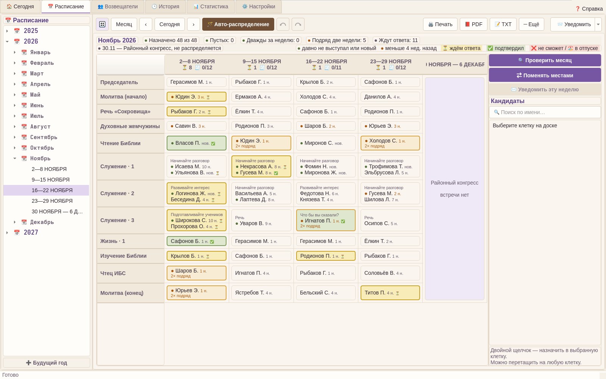
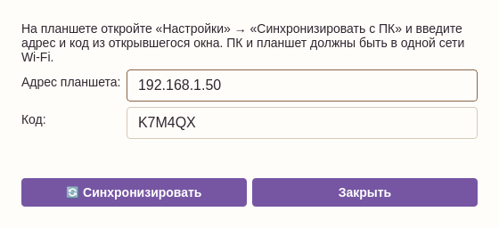
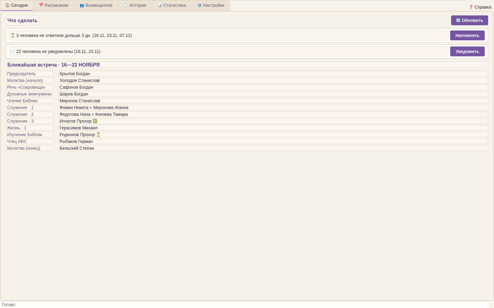

Доска месяца и авто-распределение
- Учитывает квалификации, пол, отдых и отпуск.
- Заполняет только пустые пункты — ваши ручные назначения остаются.
- Не понравилось — откат одним нажатием.
Cerastilo — бесплатный планировщик встречи «Христианская жизнь и служение». Две программы: для компьютера (Linux, скоро Windows) и для Android-планшета. Каждая работает сама по себе, а вместе — делят одну базу.
Каждая программа полностью работает сама по себе. Если у вас есть и компьютер, и планшет — они синхронизируются по Wi-Fi и всегда показывают одно и то же.
Полноценное планирование: доска месяца, авто-распределение, печать, экспорт, письма участникам.
Linux · Windows скороТо же самое приложение и тот же вид. Работает без компьютера — удобно держать в руках прямо на встрече.
AndroidПланшет становится сервером, компьютер подключается сам — по адресу и коду из 6 символов. Брандмауэр настраивать не нужно.
Базы объединяются: побеждает более свежая правка, а копия перед слиянием сохраняется.

Нужен только компьютер или только планшет — берите одну программу. Синхронизация — по желанию.
Реальные скриншоты приложения (демо-база с вымышленными именами). Нажмите на картинку, чтобы открыть крупно.




Бесплатно, без рекламы и регистрации. Неофициальное приложение, не связано с Watch Tower. Скачивание появится скоро.
Планшет: APK на GitHub Releases. В Google Play пока нет — сначала закрытое тестирование.
Скоро Скачать APKAUR-пакет «cerastilo» и AppImage для других дистрибутивов.
СкороУстановщик .exe — готовится.
Скоро Скачать .exeЧтобы опубликовать Cerastilo в Google Play, нужны тестеры с Android-планшетом или телефоном. Что делать: установить приложение через Google Play (закрытое тестирование), пользоваться им пару недель и рассказать мне об ошибках.
Напишите мне: hello@cerastilo.com
Или оставьте сообщение в разделе Issues на GitHub: github.com/pioner14/cerastilo/issues
Да. Cerastilo бесплатное, без рекламы и регистрации. Исходный код можно посмотреть, но проект не является открытым: изменять, распространять и продавать приложение можно только с письменного разрешения автора. Подробности — в файле LICENSE.
Компьютер: Linux (AUR-пакет «cerastilo» и AppImage), версия для Windows готовится. Android-планшеты: APK (позже — Google Play). Пока сборки не опубликованы — скоро.
Данные хранятся в локальной базе SQLite на вашем устройстве, своих серверов у проекта нет. Синхронизация идёт напрямую между вашими устройствами в локальной сети Wi-Fi: планшет — сервер, компьютер подключается к нему. Письма участникам уходят через ваш собственный SMTP-сервер.
Нет. Каждая программа работает сама по себе — можно пользоваться только компьютером или только планшетом. Синхронизация нужна, только если вы хотите, чтобы на обоих устройствах была одна и та же база.
Для работы с расписанием — нет. Интернет нужен только для отправки и получения писем.
Прямого импорта из NW Scheduler нет. Историю назначений можно загрузить из CSV-файла.
Да. Интерфейс есть на русском и английском; язык выбирается в «Настройках» и применяется после перезапуска.
Нет. Cerastilo не содержит текстов, изображений и других материалов JW.org и сам ничего не скачивает с этого сайта. Рабочую тетрадь вы скачиваете сами для личного использования и открываете в программе. Она раскладывает программу встреч по неделям только на вашем устройстве и никуда её не публикует. Cerastilo бесплатное и некоммерческое.
Нет. Неофициальное приложение. Не связано с Watch Tower Bible and Tract Society / JW.org.
Я разрабатываю Cerastilo самостоятельно. Если вам не хватает функции или вы нашли ошибку, напишите, что вы хотели сделать и что произошло.
Для предложений и сообщений об ошибках — раздел Issues в репозитории на GitHub. github.com/pioner14/cerastilo/issues
Cerastilo делает один человек в свободное время. Приложение бесплатное, но если оно вам помогает, вы можете поддержать разработку. Это совершенно необязательно.